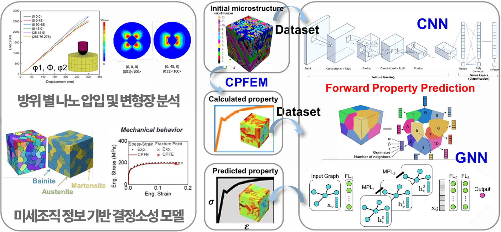

초고강도강(AHSS)은 강도가 올라갈수록 연성과 내수소취성이 저하되는 상반 물성 트레이드오프에 갇혀 있어, 강도–연성 지도의 특정 영역을 벗어나기 어렵습니다. 본 과제는 이를 넘기 위해 STMP(Sequentially Transformed Multi-Phase) steel 개념을 제시합니다. ① Sequentially Transformed — 기존 연속냉각의 B→M 상변태 순서를 뒤집어 M→B 순서를 유도하고 필름형 잔류 오스테나이트(RA)를 형성해 상 안정도를 극대화하며 Fresh Martensite를 최소화·Tempered화합니다. ② Multi-Phase — Martensite–Bainite–Film RA 복합조직으로 공정–미세조직–물성의 설계 자유도를 확장합니다. 본 과제는 2026년 나노소재기술개발사업(품목공모형, 과학기술정보통신부)으로 선정되었으며, 한국재료연구원(KIMS) 주관 아래 KIST·KAERI·고려대·창원대·부산대·성균관대가 참여해 Physics-AI 통합 예측 기반 Slim 합금 설계와 정밀 열처리로 초고강도·고연성·내수소취성을 동시 구현하는 강재 설계·제어 플랫폼을 구축합니다.
Project 02 · 나노소재기술개발사업
Free-Cycling 대응 STMP 기반 강재 설계·제어 플랫폼 구축을 통한 상반 물성 동시 구현
STMP-Based Steel Design & Control Platform for Free-Cycling
상충하는 강도·연성·내수소취성을 한 강재에서 동시에 얻기 위해, STMP 개념과 Physics-AI 설계·제어 플랫폼을 구축하는 다기관 국가 R&D 과제입니다.

About
Overview
Goal
Objectives
STMP 기반 기술로 Free-Cycling(자유로운 냉각/열처리 경로) 환경에서도 강재의 상반 물성(초고강도·고연성·내수소취성)을 동시에 구현할 수 있는 설계·제어 플랫폼을 구축하는 것이 목표입니다. 이를 위해 ① Sequential-transformation 기반 Slim 합금 지능형 설계(물리 모델+AI 통합 예측, 모델 합금 제작), ② M-B-RA 복합 미세조직 기반 내수소 강건성 확보(수소 트래핑 거동·DFT 해석), ③ Atomic–Micro–Macro 연계 Scale-bridging 분석(중성자 회절·나노압입·EBSD/TEM)을 세 축으로 추진하며, STMP 기반 강재 특성 분석 → 설계·제어 플랫폼 개발 → 실증·검증의 단계로 진행합니다.
MID Lab
Our Role
MID(성균관대)는 추진체계에서 “Atomic–Micro–Macro 연계 Scale-bridging 분석” 축에 속하며, 물성 예측 모델의 성능을 끌어올리는 데이터·모델링을 담당합니다. 먼저 나노인덴테이션 기반 STMP강 국부 기계적 응답 분석으로 다상 복합조직 내 각 상/계면의 국부 물성을 압입 시험으로 정량화하고, 나노인덴테이션 DB 기반 STMP강 특화 강도–연신율 거동 예측 모델(딥러닝)을 구축합니다.
또한 KAERI의 In-situ 중성자 회절 분석과 연계해 나노압입을 통한 변형기구 규명에 참여하고, 그 결과를 KIMS·부산대의 Physics-AI 통합 예측/모델 합금 제작으로 피드백해 상반 물성 동시 구현에 기여합니다. 요컨대 MID는 압입 기반 물성 예측·Scale-bridging 모델링으로 STMP 설계·제어 플랫폼의 예측 엔진을 담당합니다.
Scope
At a Glance
- Type
- 2026 나노소재기술개발사업(품목공모형, 과기정통부) · KIMS 주관 다기관 공동 (5개년)
- Focus
- 상반 물성(초고강도·고연성·내수소취성)의 동시 구현
- Platform
- Free-Cycling 대응 STMP(순차 상변태 다상강) 기반 강재 설계·제어 플랫폼
- Position
- 나노인덴테이션 기반 물성 예측 모델(AI) 개발 · In-situ 중성자 회절 연계 Scale-bridging 변형기구 규명